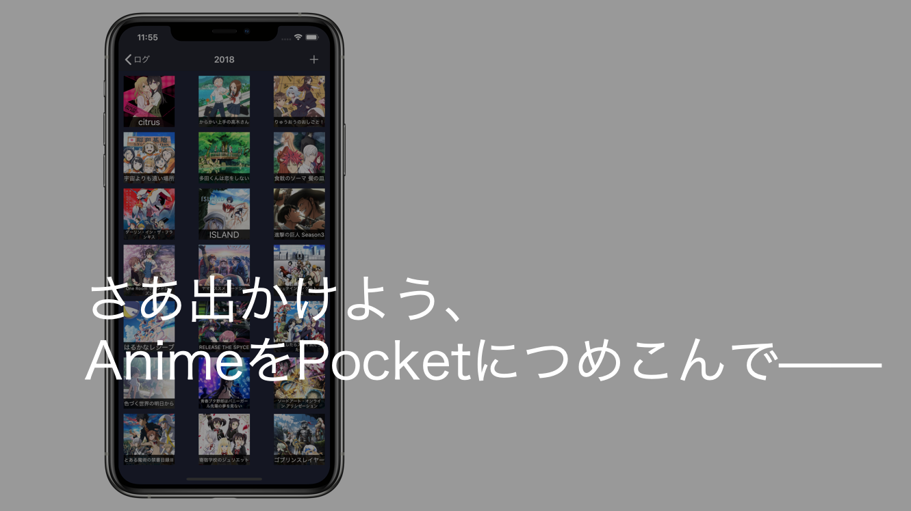

AniPocketは4つの機能であなたのアニメライフをサポートします。
今見ているアニメを管理する
曜日・放送時間・放送局など、必要な情報と共にわかりやすく管理できます。
現在放送中の作品と過去の作品を分けて管理できます。

過去に見たアニメを管理する
アニメは年別にまとめられます。
キービジュアルはもちろん、全話数やジャンル等も記録・保存しておくことができます。
これから見たいアニメを管理する
気になるアニメ・友達にオススメされたアニメの一覧を作ることができます。
タイトル順・放送開始年月順・話数順などで素早く並び替えることが可能です。
統計データを確認する
今までに見てきたアニメの数やジャンルの割合を確認することができます。
今まで知らなかった自分の好みがわかるかも？
オプション機能でさらに楽しく使いやすく。
テーマを変更する
Use English
AniPocketをダウンロード